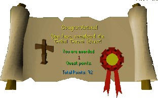

Tribal Totem
Description: Lord Handelmort of Ardougne is a collector of exotic artifacts. A recent addition to his private collection is a strange looking totem from Karamja. The Rantuki tribe are not happy about the recent disaperance of their totem.Difficulty: Intermediate
Length: Medium
Items & Skills Needed:
- 21 Thieving
Reward: 1 Quest point, 1,250 Thieving XP, 5 cooked swordfish
Instructions:
Talk to Kangai in the Shrimp and Parrot pub. He will tell you that his totem was stolen by Lord Handelmort.
Go to the house with a garden—the house with the gardener is just west of the Ardougne market, and there are guard dogs inside. Talk to the gardener, and he will tell you about the house's security. Try to open the door—you'll find that you can't enter through the front.
Go and talk to Wizard Cromperty, who is in a blue-colored house in the northeast part of Ardougne. Talk to him and ask him to teleport you—you will be teleported to the RPDT depot.
Search a box that is to be delivered to the mansion. You will get a label. Use the label on the next box, which is to be sent to the Wizard Tower. Then, talk to the RPDT employee and ask him to deliver the box. The boxes will be delivered.
Search the houses in the northwest—one of them contains a guide book. Pick it up and read it.
Return to the house where Wizard Cromperty is. Ask him to teleport you again—this time, you'll be teleported inside the mansion.
Pick the lock on the door. You will need to enter a password. The password is K U R T (not B R A D), and the door will open. Search the trap on the stairs, and go up.
Open the chest and search it—you will obtain the totem.
Return to Kangai, and he will reward you.
Congratulations, Quest Complete!

This quest guide was written by Henry-X and Matty98. Thanks to Weezy, patgil2003, Mage101, and DRAVAN for corrections.
This quest guide was entered into the database on Fri, Feb 06, 2004, at 08:56:39 PM by Chownuggs and CJH and was last updated on Mon, Aug 02, 2004, at 08:51:07 AM.